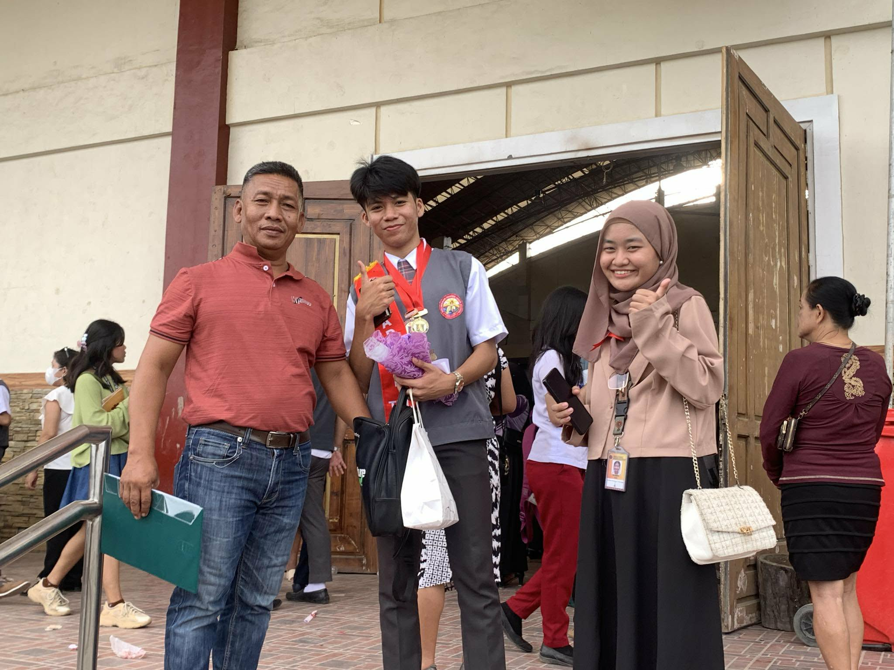
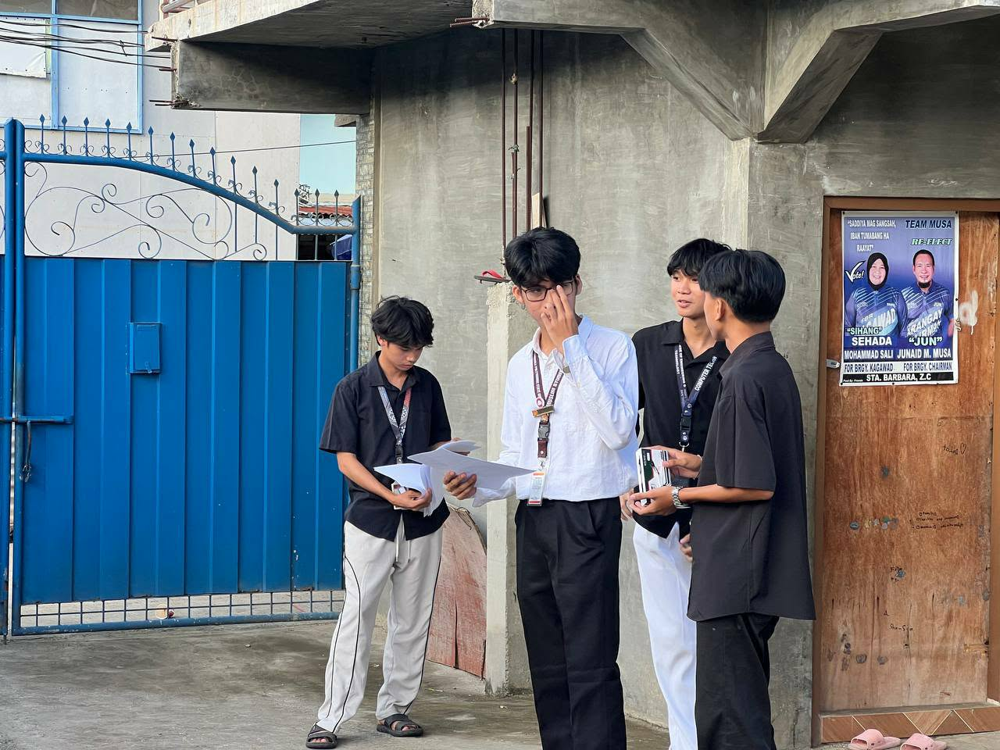
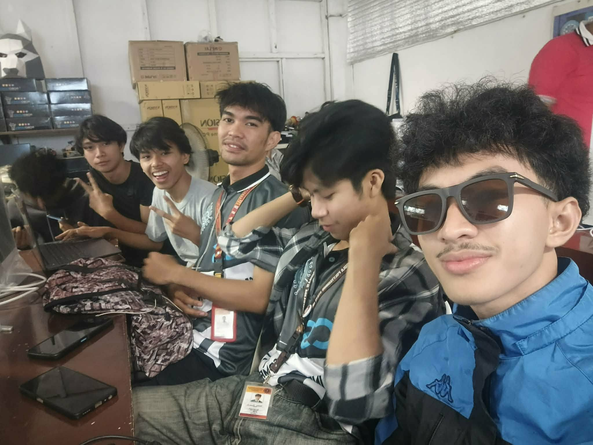
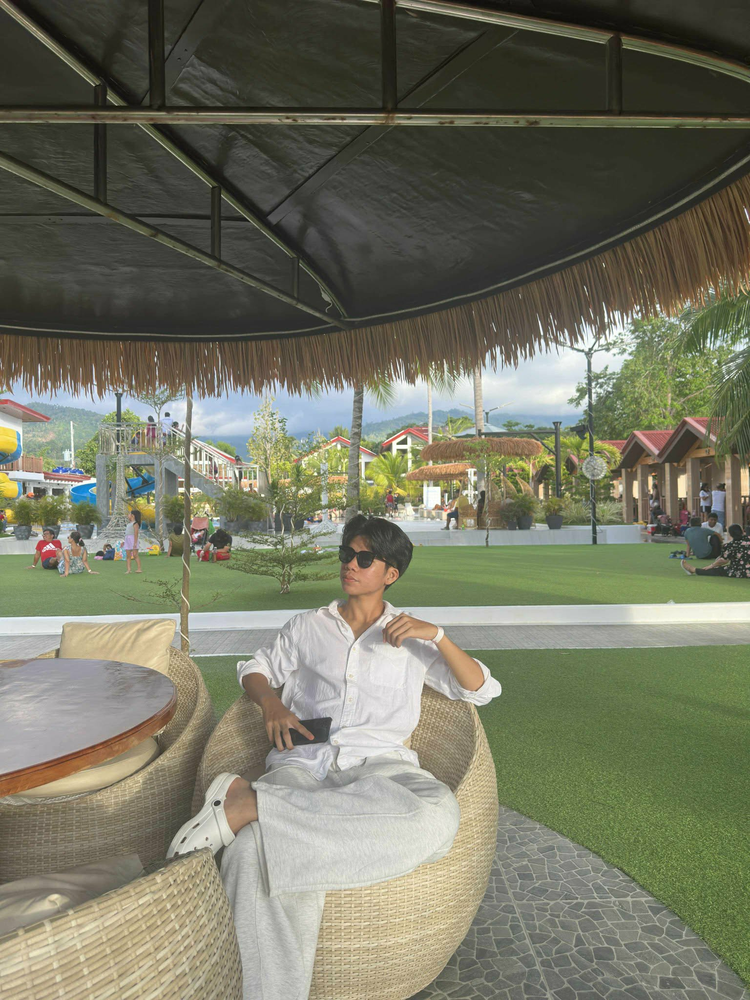
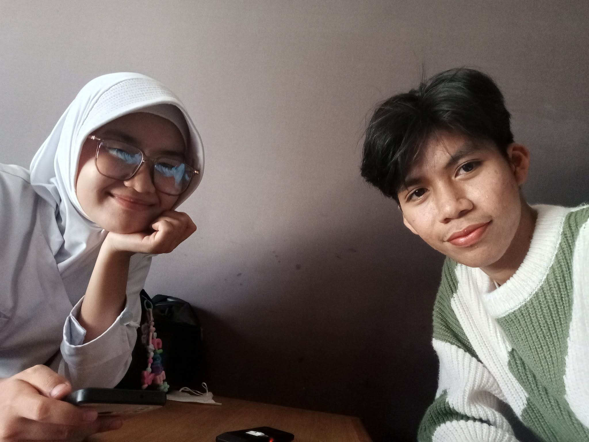
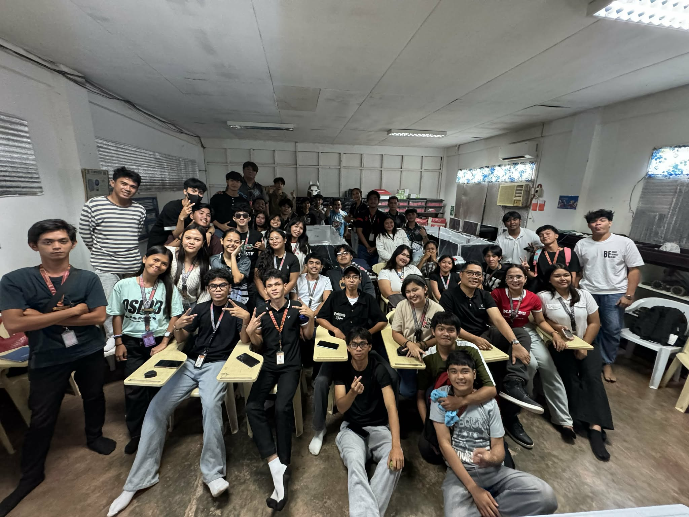
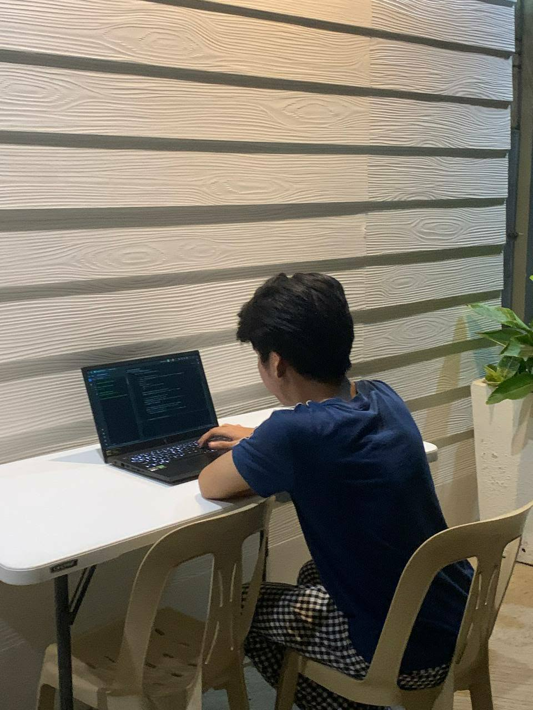
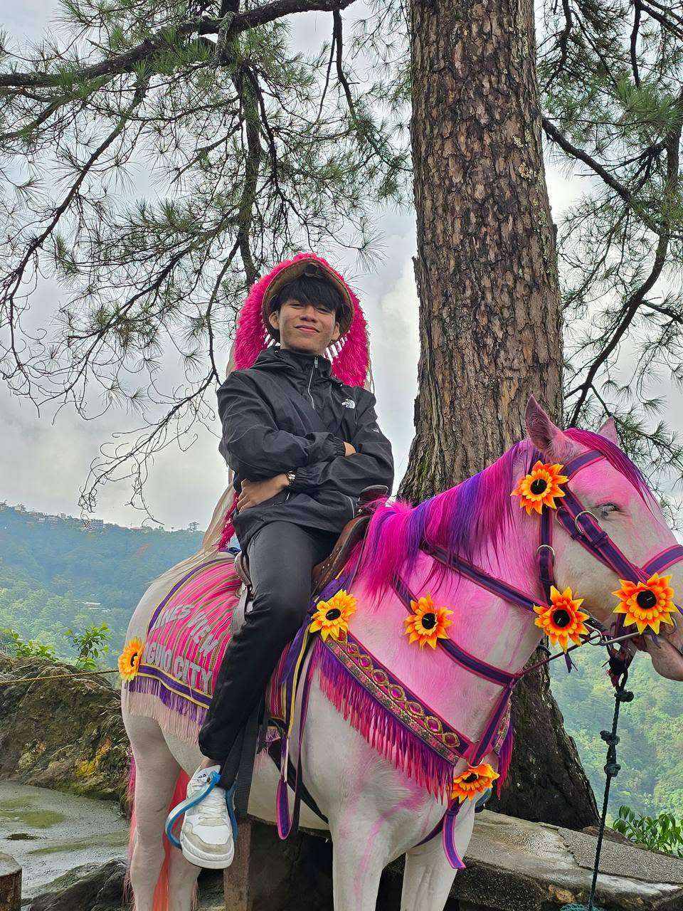
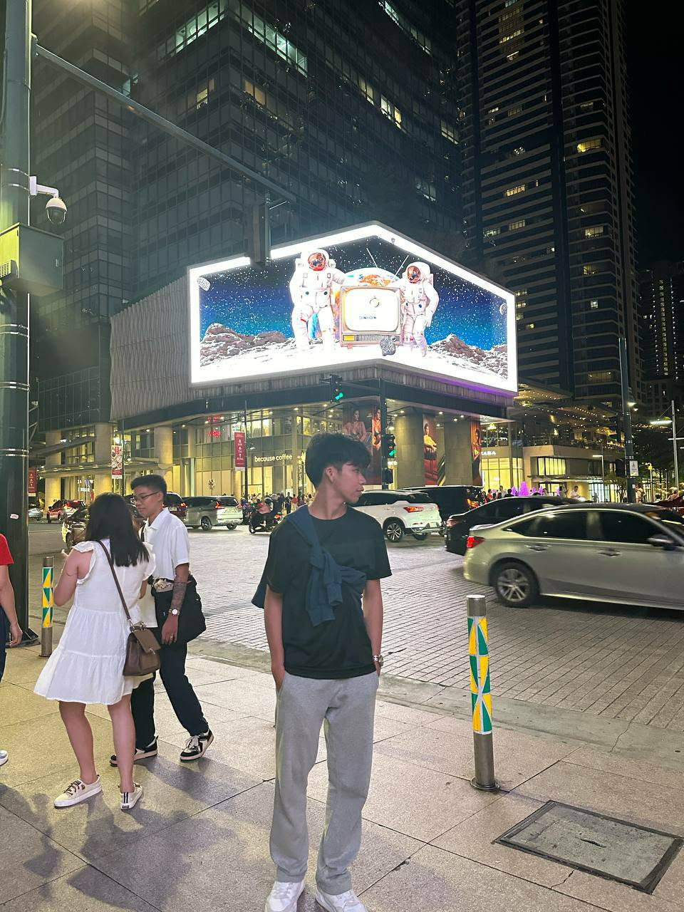

ZPPSU Student Portal
A complete CRUD management system with a dynamic UI, integrated Useless Facts API, DiceBear automatic avatars, and a PHPMailer SMTP backend.
nurbinaisamn.unaux.comAI \ Aspiring Software Engineer \ Video Editor
I am Aisam Nurbin, a developer and creative specializing in building modern websites and web applications. I focus on creating practical, problem-solving software solutions that help individuals and businesses streamline their digital presence.
Beyond web development, I am a professional video editor specializing in short-form content. I've helped creators and brands grow their audience and elevate their visual storytelling through engaging, high-retention editing techniques.
Lately, I've been diving deeper into the world of Artificial Intelligence. My work involves understanding how AI models function under the hood and leveraging generative AI tools to optimize workflows, build intelligent applications, and deliver cutting-edge solutions.
A complete CRUD management system with a dynamic UI, integrated Useless Facts API, DiceBear automatic avatars, and a PHPMailer SMTP backend.
nurbinaisamn.unaux.comMy professional video editing showcase featuring cinematic cuts and motion graphics.
aisamportfolio.vercel.appAn IoT hardware project utilizing Arduino UNO for automated environmental monitoring.
Private / Hardware







